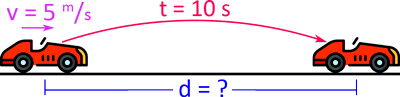
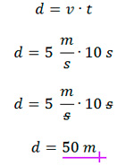
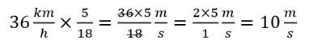
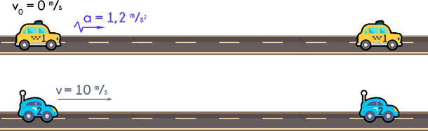

Resumen de conceptos básicos MRU/MRUV
Concepto de MRU
(Movimiento Rectilíneo Uniforme) El Movimiento Rectilíneo
Uniforme (MRU) es aquel en el que un objeto se desplaza en línea recta con
velocidad constante. En este tipo de movimiento, la distancia recorrida en
intervalos de tiempo iguales es la misma, y la aceleración es cero.

Ejemplo 1:
Un móvil avanza con MRU a razón de 5 m/s durante 10 s. Calcular la distancia recorrida.
Solución:
Sabemos que el móvil avanza con MRU y además tenemos los siguientes datos:
Rapidez: v = 5 m/s
Tiempo: t = 10 s.
Distancia: d = ?

Calcularemos la distancia «d» empleando las fórmulas:

Concepto de MRUV
(Movimiento Rectilíneo Uniformemente Variado) El
Movimiento Rectilíneo Uniformemente Variado (MRUV) es aquel en el que un
objeto se mueve en línea recta con aceleración constante. En este caso, la
velocidad del objeto cambia de manera uniforme a lo largo del tiempo, lo
que implica que recorre distancias diferentes en intervalos de tiempo
iguales.
El movimiento rectilíneo uniformemente variado o MRUV es un movimiento que ocurre sobre
una línea recta con aceleración constante. En el MRUV la aceleración es constante, nunca va a cambiar,
siempre es la misma. Mucha atención, lo constante es la aceleración, no la velocidad.

Ejemplo 1:
Te diriges hacia tu trabajo y en el instante en que las luces del semáforo se ponen en verde,
un automóvil que ha estado esperando a tu lado acelera a razón de 1,2 m/s2, mientras que un segundo automóvil,
que acaba de llegar en ese preciso instante,
continúa con una velocidad constante de 36 km/h. Calcular:
¿Cuánto tiempo se necesita para que el primer automóvil alcance al segundo?
Solución:
En este problema, tenemos 2 autos, uno que parte del reposo (0 m/s) con aceleración de 1,2 m/s2, es decir,
avanza con MRUV (movimiento rectilíneo uniformemente variado). Mientras que el segundo auto,
avanza con velocidad constante de 36 km/h, es decir, con MRU (movimiento rectilíneo uniforme).
Trabajaremos con todos los valores expresados en el sistema internacional,
por ello, vamos a convertir los 36 km/h a m/s, usando el factor 5/18:

Entonces, 36 km/h equivalen a 10 m/s. Colocamos el gráfico nuevamente, ahora con los 10 m/s:
